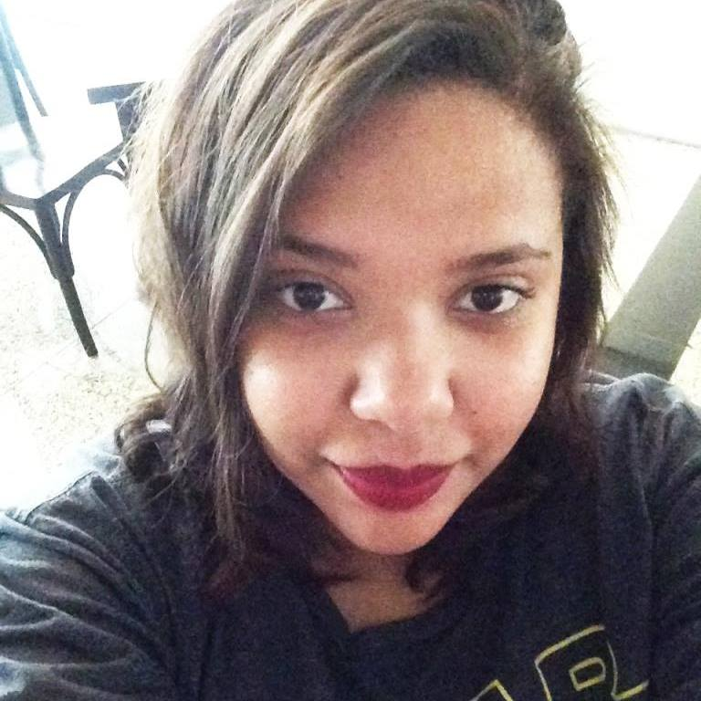

Funções / Mixagem e efeitos sonoros
As informações de cada perfil são de responsabilidade das profissionais.
Você quer conhecer profissionais de quais estados?
Marcar/Desmarcar todos
CARREGANDO ...
Ana Carol Alves (SP)
Ana Carol Alves
29 anos | São Paulo (SP)
anaksoninho@gmail.com
Ana Carol Alves é editora do site Game of Thrones BR. Mora em São Paulo, é formada pela Belas Artes, musicista (harpa e piano) e atualmente estuda dramaturgia na SP Escola de Teatro.
http://www.gameofthronesbr.com
Outras atividades de Ana Carol Alves
Crítica |
Pesquisa e desenvolvimento
Amostra de podcast
 Catarina Apolonio (CE/PE)
Catarina Apolonio (CE/PE)
Catarina Apolonio
36 anos | Fortaleza (CE) e Recife (PE)
catapolonio@gmail.com
Catarina Apolonio é recifense, formada em Som pela Escuela Internacional de Cine y TV de Cuba e em Comunicação Social RTV pela UFPE. Trabalha com pós-produção de som e imagem no Brasil e América Latina. Entre seus trabalhos mais conhecidos estão a edição de som para o filme "O Som ao Redor" (de Kléber Mendonça Filho) e edição de ambientes e efeitos para "Prófugos" (série do diretor chileno Pablo Larraín para a HBO Latina). Atualmente, também trabalha como técnica de gravação e operação de áudio no curso de Música da Universidade Federal do Ceará.
http://www.imdb.com/name/nm3569920/?ref_=fn_al_nm_1
Outras atividades de Catarina Apolonio
Edição
Amostra de vídeo
 Fernanda Araujo (SP)
Fernanda Araujo (SP)
Fernanda Araujo
35 anos | São Paulo (SP)
contato@amusicaria.com.br
Fernanda Araujo, filmmaker, formada em Rádio e TV pela Universidade Metodista desde 2004, especializada em Direção de Fotografia Avançada pela AIC. Atualmente trabalho como videomaker na empresa Salon Line, onde contribuo com a criação de conteúdos para internet e sou responsável pelo criação do conteúdo audiovisual da marca nas redes. Também realizo a produção executiva e/ou coordenação de alguns dos projetos audiovisuais da marca produzidos por terceiros.
Outras atividades de Fernanda Araujo
Captação de Som |
Coordenação de projeto |
Direção |
Direção de fotografia |
Edição |
Pesquisa e desenvolvimento |
Produção |
Produção executiva |
Roteiro
Amostra de vídeo
 Natalie Matos (MG)
Natalie Matos (MG)
Natalie Matos
21 anos | Belo Horizonte (MG)
natalie.m.moura@gmail.com
A única certeza que mora em mim é a de que a cada passo aprendo algo novo e construo minha identidade. Como uma árvore que cresce regada ao amor e às dificuldades, dá bons frutos e flores, mas também amadurece antes da hora e às vezes até mesmo cai, mas, sempre lembra que tudo que se vive fortalece suas raízes. E sempre quando eu precisar vou ao meu interior e discuto comigo, para entender esse meu eu que às vezes recusa falar e prefere apenas sentir. Gradua em Cinema e Audiovisual e Técnico em Artes Visuais, hoje tenho projetos de visibilidade ao protagonismo da mulher preta e a juventude periférica.
http://nataliem-moura.wixsite.com/nataliematos
Outras atividades de Natalie Matos
Animação |
Assistência de Direção |
Captação de Recursos |
Captação de Som |
Cenografia |
Continuidade |
Correção de cor |
Direção |
Direção de Arte |
Direção de Fotografia |
Edição |
Fotografia Still |
Iluminação |
Pesquisa e desenvolvimento |
Preparação de Elenco |
Produção |
Roteiro
Amostra de vídeo
 Victória Moreira (SP)
Victória Moreira (SP)
Victória Moreira
21 anos | Osasco (SP)
victoria.mslopes@gmail.com
Victória Moreira, 21 anos, estudante de rádio, TV e internet da faculdade Cásper Líbero. Experiência com os softwares: Illustrator, Photoshop, Premiere, After Effects e Audition.
http://behance.com/victoriamslopes
Outras atividades de Victória Moreira
Continuidade |
Correção de cor |
Edição
Amostra de vídeo
 Verônica Honorato (SP)
Verônica Honorato (SP)
Verônica Honorato
26 anos | São Paulo (SP)
veronica.honoratosouza@gmail.com
Meu nome é Verônica e sou formada em Rádio e TV e curso no momento Motion Graphics. Me formei há três anos e comecei a trabalhar com vídeos de gastronomia e cobertura de eventos. No momento, trabalho com vídeos para a comunidade surda. São curtas metragens no formato humorístico e faço parte da equipe de direção de fotografia, edição e animação. Também atuo em alguns vídeos.